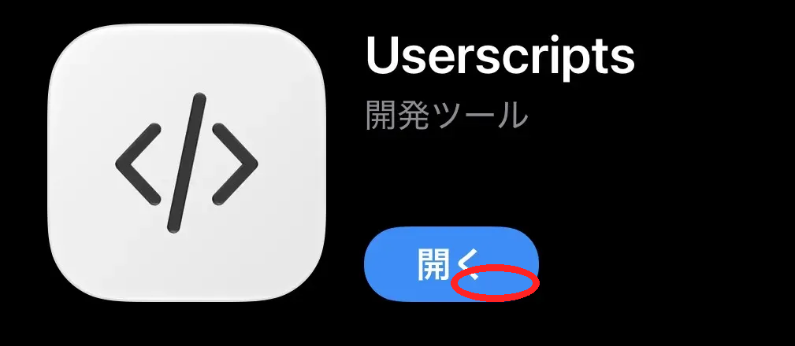
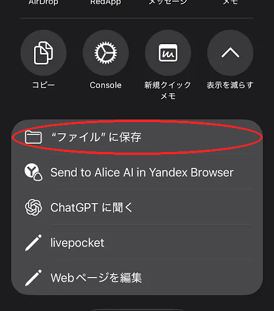
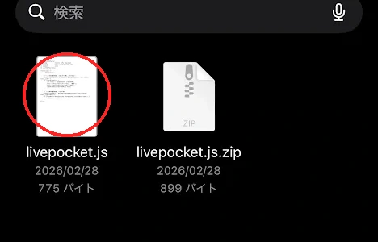
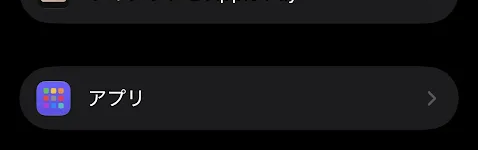
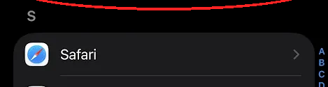
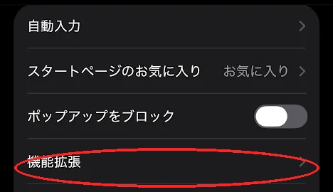
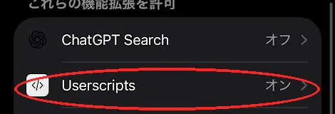
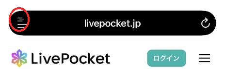
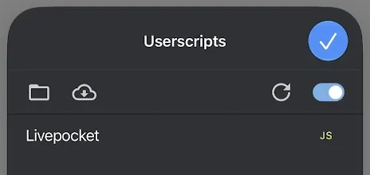

① Userscriptsをインストール
App StoreでUserscriptsを入手します。
iPhoneでUserscriptsをインストールし、Safariでスクリプトを使えるようにする手順です。

App StoreでUserscriptsを入手します。

共有メニューから「“ファイル”に保存」を選びます。

Userscriptsフォルダ内に展開された.jsファイルがあることを確認します。

iPhoneの「設定」から「アプリ」を開きます。

アプリ一覧からSafariを選択します。

Safariの設定内にある「機能拡張」を開きます。

機能拡張一覧でUserscriptsをオンにします。

対象サイトを開き、画面上のブラウザ操作メニューを確認します。

Userscripts内にスクリプト名が表示され、右側の「JS」が黄色なら確認完了です。